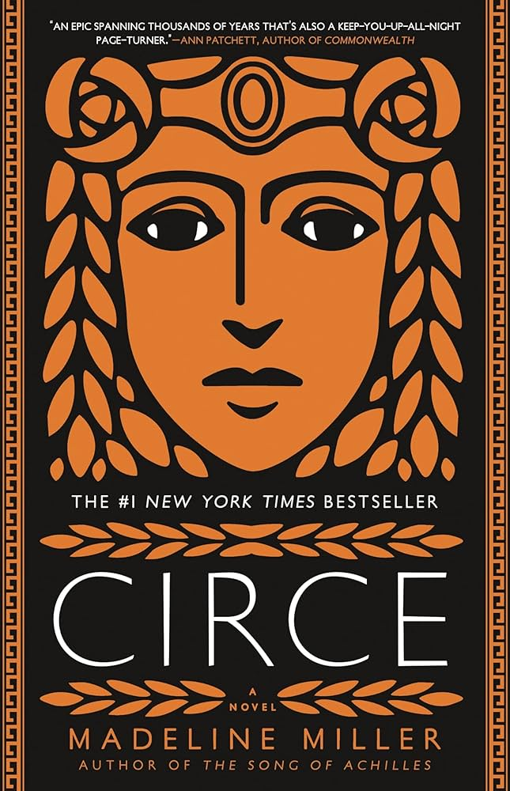

About this page
This page features a few of the recent books and podcasts that I have listened to/read, enjoyed, and now want to recommend to you! This page should hopefully give you some ideas if you are looking for a new book or podcast. Feel free to contact me (contact information located on homepage) if you have any questions, recommendations for me, or comments!
Podcasts:
Smartless
Hosts
- Jason Bateman
- Will Arnett
- Sean Hayes
Morbid
Hosts
- Ash Kelley
- Alaina Erquhart
Books:
Dune

Description: Set on the desert planet Arrakis, Dune is the story of the boy Paul Atreides, heir to a noble family tasked with ruling an inhospitable world where the only thing of value is the “spice” melange, a drug capable of extending life and enhancing consciousness. Coveted across the known universe, melange is a prize worth killing for. When House Atreides is betrayed, the destruction of Paul’s family will set the boy on a journey toward a destiny greater than he could ever have imagined. And as he evolves into the mysterious man known as Muad’Dib, he will bring to fruition humankind’s most ancient and unattainable dream.
Circe
Description: In the house of Helios, god of the sun and mightiest of the Titans, a daughter is born. But Circe is a strange child--neither powerful like her father nor viciously alluring like her mother. Turning to the world of mortals for companionship, she discovers that she does possess power: the power of witchcraft, which can transform rivals into monsters and menace the gods themselves.